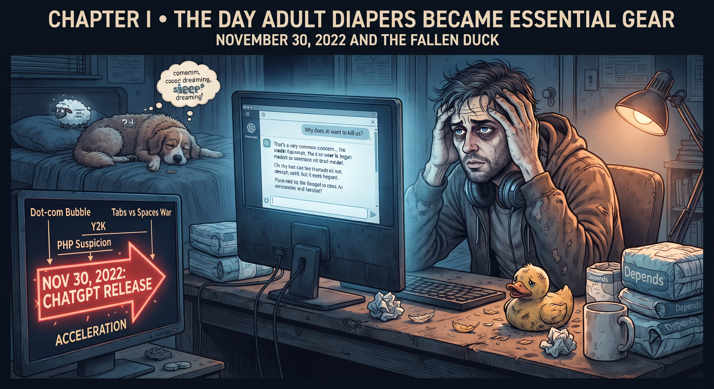

November 30, 2022 and the Fallen Duck

I started working professionally in 2000. I survived the dot-com bubble burst, Y2K (which was supposed to send us back to the Stone Age, but mostly just forced a server reboot), countless wars between tabs vs. spaces advocates, and the days when PHP was still whispered about with deep suspicion. I thought I had seen it all in IT.
Then came November 30, 2022.
In tech history, dates fall into two categories: important ones, and the ones where you start considering adult diapers. 1956 – the term "AI" was coined (scientists in Dartmouth had a few drinks and decided machines would think). Then years of silence, AI winters, until we finally got the first "real" AI... and the world suddenly accelerated.
That evening, I checked IT news and found out something. I couldn't sleep. Lying in bed with an inexplicable sense of dread, wondering if at my age it's already appropriate to buy pampers, because I couldn't tell if I was sleepless from excitement or from the fear that I didn't have enough diapers stocked for the upcoming apocalypse.
Back then, nobody in the industry was panicking yet. Everyone just waved it off: "Meh, just a toy. A fancier autocomplete, a search engine with bugs".
So I sat down at my desk and typed my very first prompt ever: "Why does AI want to kill us?".
For a long time, she had been sitting on my desk, the yellow, faithful rubber duck. Witness to countless heated debugging sessions, she had helped me an infinite number of times. The classic, silent developer attribute for analyzing code issues. Patient, warm, abandoned at the edge of the monitor. Unfortunately, the duck went down in history as the first fatality caused by ChatGPT. When the model started actually answering back, the duck became redundant. My dog took over. Designed as an engineer's helper, she ended up in a canine jaw – a brutal market validation.
For the first few days, I felt one thing: finally, I can talk to someone. Just like that. At work. About work. A difficult, complicated relationship with a machine that was going to change everything had begun.